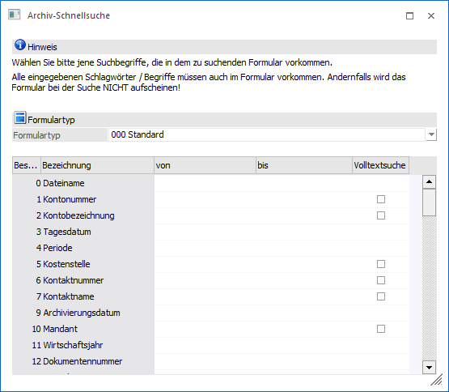
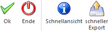

Über den Menüpunkt…
1 CRM
1 Archiv Schnellsuche
… kann in jeder Applikation der WinLine START die Archivsuchen schnell und einfach gestartet werden. Die Parameter der Suche werden über ein oder mehrere Schlagwörter vorgegeben.

Ø Formulartyp
An dieser Stelle kann über den Formulartyp bestimmt werden, welche Schlagwörter für die Suche zur Verfügung stehen sollen.
ü 000 - Standard
Bei "000 -
Standard" stehen werden alle Schlagwörter in der Tabelle aufgelistet, die im
Programm "Schlagwörter - Definition" angelegt wurden (WinLine ADMIN - Archiv -
Beschlagwortung - Schlagwörter).
ü 001 bis 999 - individuelle
Formulartypen
Es werden jene Schlagwörter zur Selektion angeboten, welche im
Formulartyp hinterlegt wurden (weitere Informationen zu den Formulartypen finden
Sie im Kapitel "Formulartypen - Anlage").
Hinweis
Wird die Suche unter Verwendung eines Formulartyps durchgeführt, so wird in die Suche auch der Formulartyp (Schlagwort 13) mitübergeben.
Ø Tabelle "Suchkriterien"
Für alle in der Tabelle angezeigten Schlagwörter kann ein Suchkriterium hinterlegt werden. Die Suchkriterien werden hierbei alle mit UND verknüpft, so dass nur jene Archiveinträge gezeigt werden, die auf alle Suchbegriffe zutreffen.
Hinweis
Bei bestimmten Feldern (dort wo es Sinn macht) kann die Option "Volltextsuche" aktiviert werden. Damit wird gesteuert, ob die Suchbegriffe am Anfang gesucht werden sollen oder ob eine Volltextsuche durchgeführt werden soll.
Tabellenbuttons

Ø Ausgabe Excel
Durch Anwahl des Buttons "Ausgabe Excel" wird der Inhalt der Tabelle an Microsoft Excel übergeben.
Ø Tabelleneinstellungen speichern
Die Spalten einer Tabelle können grundsätzlich an beliebige Positionen verschoben, bzw. in der Breite entsprechend angepasst werden. Durch Anwahl des Buttons "Tabelleneinstellungen speichern" werden die Einstellungen benutzerspezifisch gespeichert und bei dem nächsten Aufruf des Programmpunktes wieder vorgeschlagen.
Ø Gesamteinstellungen speichern
Im Gegensatz zu "Tabelleneinstellungen speichern" können mit "Gesamteinstellungen speichern" mehrere Tabellenaufbauten gespeichert und nach Wunsch geladen werden. Zusätzlich werden Sonderfunktionen der Tabelle (z.B. "Spalte gruppieren") ebenfalls bei der Speicherung bedacht.
Buttons

Ø Ok
Durch Drücken des Buttons "Ok" bzw. der Taste F5 wird die Archivsuche gestartet.
Ø Ende
Mit Hilfe des Buttons "Ende" bzw. der Taste ESC wird das Fenster geschlossen
Ø Schnellansicht
Bei Anwahl des Buttons "Schnellansicht" werden die Suchergebnisse direkt in der Dokumenten-Anzeige angezeigt. Dort kann mit Hilfe der Buttons "vorheriges Dokument / nächstes Dokument" zwischen den einzelnen Dokumenten gewechselt werden.
Ø schneller Export
Durch Anklicken dieses Buttons können die Archivdokumente exportiert werden. Voraussetzung hierfür ist, dass in der Tabelle zumindest ein Selektionskriterium ausgefüllt wurde (anhand dessen der Export durchgeführt werden kann). Nach Anklicken des Buttons wird man nach einem Verzeichnis gefragt, wobei jenes vorgeschlagen wird, welches man in den "Archiv - Exporteinstellungen" gewählt hat. Nach der Auswahl startet der Export. Je nach Archivparameter-Exporteinstellung werden in dem Verzeichnis dann…
ü … nur die Archivdokumente…
ü … die Archivdokumente inkl. einer dazugehörigen Text-Datei (die alle Schlagwörter beinhaltet)…
ü … die Archivdokumente inkl. einer dazugehörigen XML-Datei (die alle Schlagwörter beinhaltet)...
… ausgegeben.